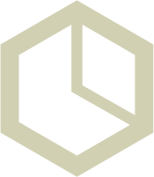
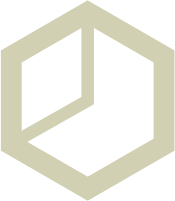
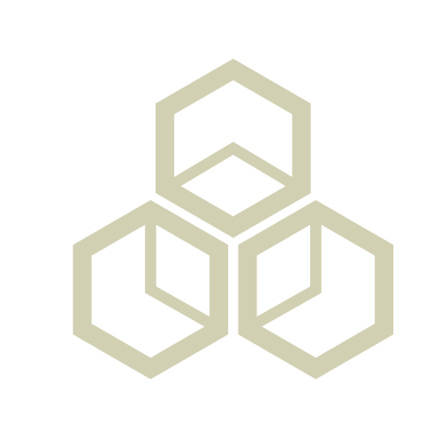

Two Industries Converging
Norway built world-class nuclear research institutions and delivered some of the most complex offshore energy projects in history. This is the legacy Arv Energy is building on top of.
Selected Milestones
Key moments from Norway's nuclear research and offshore engineering history that inform Arv Energy's approach.

Institutt for Atomenergi Founded
Gunnar Randers established Norway's nuclear research institution at Kjeller, placing the country among the first nations to pursue peaceful nuclear energy. The institute — now IFE — laid the groundwork for decades of reactor physics, materials science, and safety culture.

JEEP-1 Achieves Criticality
The JEEP-1 reactor at Kjeller became the first nuclear reactor outside the great powers to achieve criticality. Norway demonstrated that a small nation could master the most demanding energy technology of its time.
Halden Boiling Water Reactor
The Halden Reactor began operation, eventually becoming the centre of an international OECD research project spanning 20+ countries. For six decades it produced foundational knowledge on fuel behaviour, reactor safety, and human-machine interaction in control rooms.
Ekofisk — The North Sea Opens
The discovery of the Ekofisk field launched Norway's offshore era. Within a decade the country built a world-leading oil and gas industry characterised by stringent safety requirements, massive engineering projects, and an industrial policy that ensured domestic competence development.
Statfjord A — The Mega-Project Era
Statfjord A began production as one of the largest concrete gravity-base platforms ever built. The Statfjord development demonstrated that Norwegian yards and engineers could deliver infrastructure of extraordinary scale and complexity, on schedule and to specification.
Troll A — Engineering at Scale
The Troll A platform — the tallest structure ever moved by humans — was towed to the Troll field in the North Sea. At 472 metres and 656,000 tonnes, it remains an icon of what Norwegian engineering and coastal fabrication yards can achieve.
Snøhvit LNG
Snøhvit marked the first field development in the Barents Sea and linked subsea production to LNG export from Melkøya. Its 33,000-tonne process plant was built on a massive steel barge so it could be transported north on the Blue Marlin and floated directly into its final dock on the island — a striking example of O&G system-level execution in remote conditions.
Halden Reactor Shuts Down
After 60 years of operation the Halden Boiling Water Reactor was permanently shut down. The closure marked the end of Norway's active reactor era — but left behind a deep reservoir of nuclear knowledge, safety expertise, and institutional memory.
Johan Sverdrup — Another Giant Project
With power from shore, bridge-linked platforms, and one of the largest developments on the Norwegian shelf, Johan Sverdrup exemplifies modern offshore execution, industrial scale paired with operational efficiency and lower emissions. Its largest offshore lift was approximately 27,000 tonnes.
Yggdrasil — Digitally Integrated
Yggdrasil brings Hugin, Munin, and Fulla into one coordinated area development with shared infrastructure and power from shore. It points toward a new generation of Norwegian offshore projects built around integration, efficiency, and lower-emission operations: Munin is designed for unmanned operation, while Hugin A is a 29,000-tonne platform at the centre of the development.

The Foundation
Arv Energy was founded with the goal of bringing the best of these industries to provide clean and valuable energy for generations. The name "Arv", Norwegian for heritage or legacy, reflects a conviction that the best way to build the future is on the foundation of what has already been proven.
Selected milestones drawn from Norwegian nuclear and offshore industrial history.
Heritage is not nostalgia.
It is a competitive advantage.
The engineers who built JEEP-1, the project managers who delivered Troll A, and the researchers who built and ran the Halden Reactor — their knowledge is the foundation for the next chapter in our industry and energy history.
Get in Touch